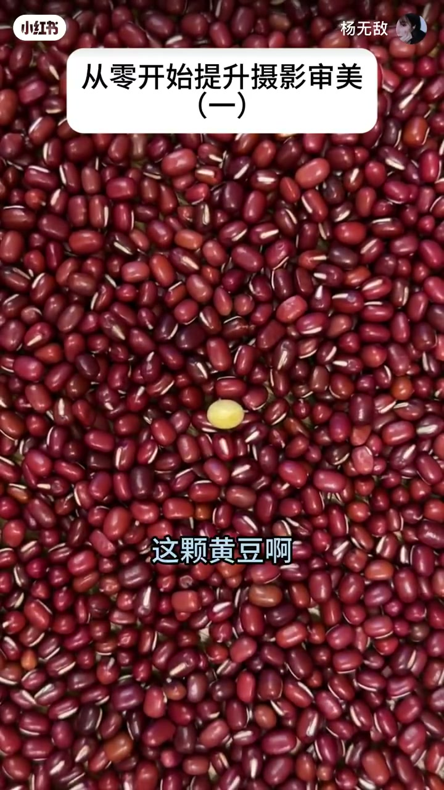
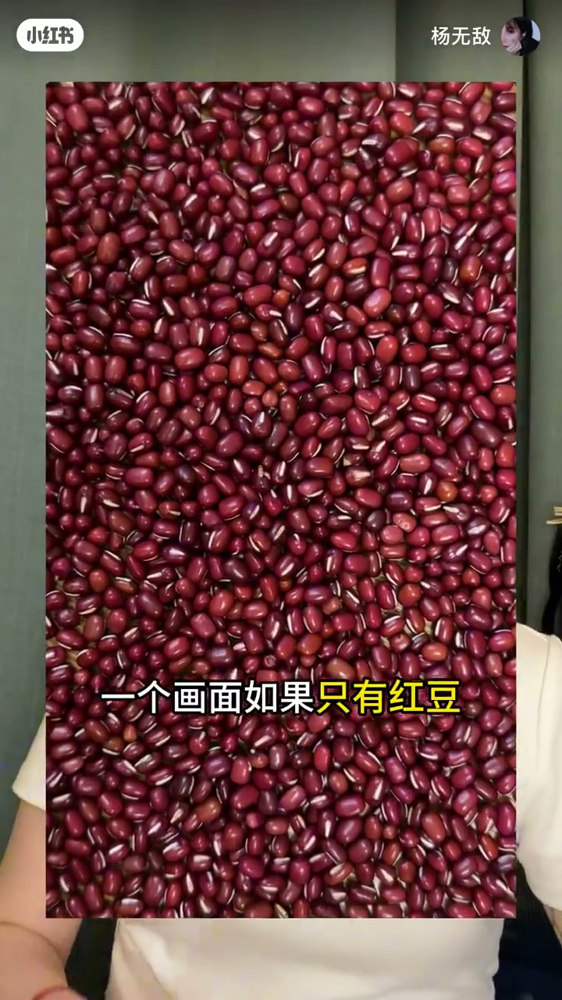
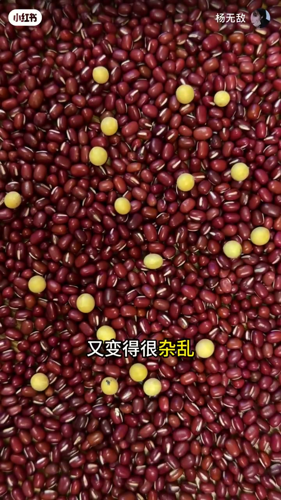
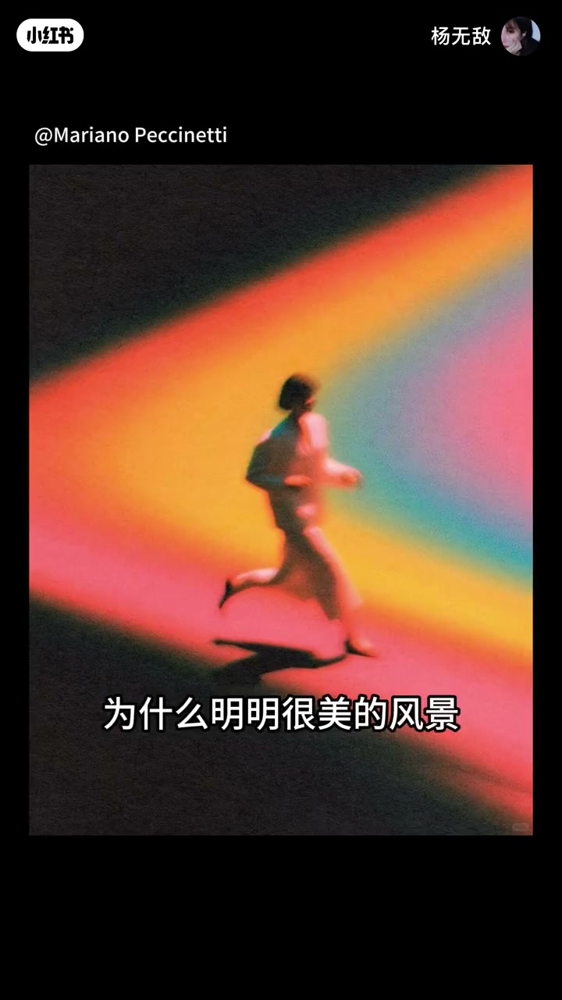

内容要点
一支 1 分 43 秒的审美启蒙课：用「红豆配黄豆」的比喻，讲清摄影构图的底层逻辑。人天生会看最突出的事物，而相机不会——所以拍照的第一步，是帮相机找到那颗「黄豆」。从拍照延伸到穿搭、化妆、海报设计，最后落脚到基本功的重要性。
知识结构
红豆这么多，你却总是看那颗黄豆——能轻易看到最突出的事物，就是你天生就有的审美。
一个画面只有红豆就没有重点，观众不知道该看哪里；黄豆太多又杂乱，不知道该看谁；只有一颗黄豆，既有重点又舒服。
明明很美的风景拍出来很丑，因为眼睛会找黄豆而相机不会——第一步就是帮相机找到那颗黄豆。
生活处处有黄豆：穿搭、化妆、海报设计，都需要一个突出的重点。
只有先能拍好一颗黄豆，才可能拍好更多颗黄豆。创造的自由，建立在扎实的基本功上。
审美的第一课是「找黄豆」：画面里要有一个让观众视线落脚的重点。先帮相机找到那一颗黄豆，再谈更多更宏大的构图。
00:00-00:25你天生就有审美
视频从一个自我怀疑开始：「怎么办，我总觉得我审美太差了。」对方的回应出人意料：「你信吗？其实你天生就有审美。」
他用一个现场实验证明：「比如此刻，你在看什么？嗯，这颗黄豆啊。」画面里红豆很多，黄豆只有一颗，「可你看的却总是这颗黄豆」。「能轻易看到最突出的事物，这不就是你天生就有的审美吗？」

00:25-00:42找黄豆：审美的第一课
「来，今天讲审美的第一课：找黄豆。」主讲人给出三种画面的对比。「一个画面如果只有红豆，就没有重点，观众不知道该看哪里。」「而黄豆太多呢，又变得很杂乱，观众不知道该看谁。」
「那如果只有一颗黄豆呢？既有重点又很舒服，对吧。」红豆象征背景、黄豆象征焦点——一颗黄豆，就是画面里的视觉重心。


00:42-00:65为什么好风景拍出来很丑
「比如拍照。为什么明明很美的风景，但拍出来就很丑？」主讲人给出解释：「是因为你的眼睛会找黄豆，但相机不会。它只是一台机器，它不懂美，于是只能把它看到的一切全拍进去。」
「所以我们要做的第一步，就是帮相机找到那颗黄豆。」拍摄前先想清楚画面里的焦点在哪——这就是把「眼睛里的美」翻译给相机的过程。

00:65-00:84生活处处有黄豆
「而且不止拍照，生活其实处处有黄豆。」主讲人把概念延伸到穿搭、化妆、海报设计——每一处都有一个「让视线落脚」的重点。一个造型需要一个亮点，一张海报需要一行主标题，道理相通。
00:84-01:43先拍好一颗黄豆
「那我如果不想只拍一颗黄豆呢？拍多了也太无聊了。」面对想拍「更宏大、更复杂世界」的想法，主讲人提醒：「只有先能拍好一颗黄豆，你才有可能能拍好更多颗黄豆。」
结尾是一句意味深长的总结：「创造的自由，建立在扎实的基本功上。这些以后我慢慢跟你讲。」审美没有捷径，先掌握最基础的「找黄豆」，才有资格谈复杂构图。
完整转录（52段）
以下文本由 Whisper medium 模型自动转录，可能存在少量识别误差，已尽可能修正。
怎么办 我总觉得我审美太差了
你信吗 其实你天生就有审美
比如 此刻 你在看什么
嗯 这颗黄豆（保留）啊
那你发现了吗
明明红豆（保留）这么多
而黄豆（保留）只有这一颗
可你看的却总是这颗黄豆（保留）
哎 是啊
但是这跟审美有啥关系啊
能轻易看到最突出的事物
这不就是你天生就有的审美吗
来 今天讲审美的第一课
找黄豆（保留）
你看啊
一个画面如果只有红豆（保留）
就没有重点
观众不知道该看哪里
而黄豆（保留）太多呢
又变得很杂乱
观众不知道该看谁
那如果只有一颗黄豆（保留）呢
既有重点又很舒服 对吧
就像这些
比如 拍照
为什么明明很美的风景
但拍出来就很丑
是因为你的眼睛会找黄豆（保留）
但相机不会
它只是一台机器
它不懂美
于是只能把它看到的一切全拍进去
所以我们要做的第一步
就是帮相机找到那颗黄豆（保留）
对
而且不止拍照
生活其实处处有黄豆（保留）
比如
穿搭
化妆
海报设计
那我如果不想只拍一颗黄豆（保留）呢
拍多了也太无聊了
我明白
你可能想拍更宏大
更复杂的世界
但是
只有先能拍好一颗黄豆（保留）
你才有可能能拍好更多颗黄豆（保留）
创造的自由
建立在扎实的基本功底上
这些以后我慢慢跟你讲